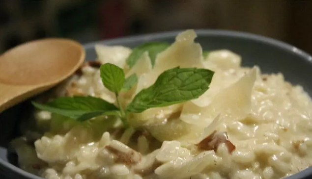

Ingrédients
Ingrédients pour 4 personnes :
- 250g Riz arborio spécial risotto
- 300g champignons
- 2 cubes de bouillon de légumes
- 1 oignon
- 10cl de vin blanc
- 15cl de crème fraiche
- 100g parmesan
- 1gousse d'ail
- 1noix de beurre
- 1cuillère à soupe d'huile d'olive
- 3braches de persil
- sel
- poivre
Étape 1
Préparez les champignons. Passez-les rapidement sous un filet d'eau, essuyez-les et détaillez-les en gros morceaux. Faites fondre une noix de beurre et faites-y revenir la gousse d'ail émincée pendant 2 minutes. Ajoutez les champignons et laissez-les cuire environ 3 minutes en ajoutant le persil lavé et ciselé à la fin. Ajoutez 3 cuillères à soupe de vin blanc et laissez cuire 2 minutes jusqu'à ce qu'il réduise. Ajoutez la crème fraîche et mélangez. Salez, poivrez et réservez.
Étape 2
Faites bouillir un litre d'eau dans lequel vous diluerez les cubes de bouillon. Dans une sauteuse, faites chauffer l'huile d'olive pour y faire blondir l'oignon émincé pendant 3 minutes. Ajoutez le riz et laissez-le cuire en remuant pendant 2 minutes jusqu'à ce qu'il soit un peu transparent.
Étape 3
Ajoutez 10 cl de vin blanc (1/2 verre) et une fois qu'il est absorbé par le riz, ajoutez une louche de bouillon, puis mélangez. Une fois que le bouillon est bien absorbé, ajoutez une nouvelle louche, et ainsi de suite jusqu'à épuisement du bouillon (environ 20 bonnes minutes).
Étape 4
Ajoutez la moitié du parmesan et les champignons, attendez 2 minutes puis mélangez vivement.
Étape 5
Servez très chaud avec le reste du parmesan.